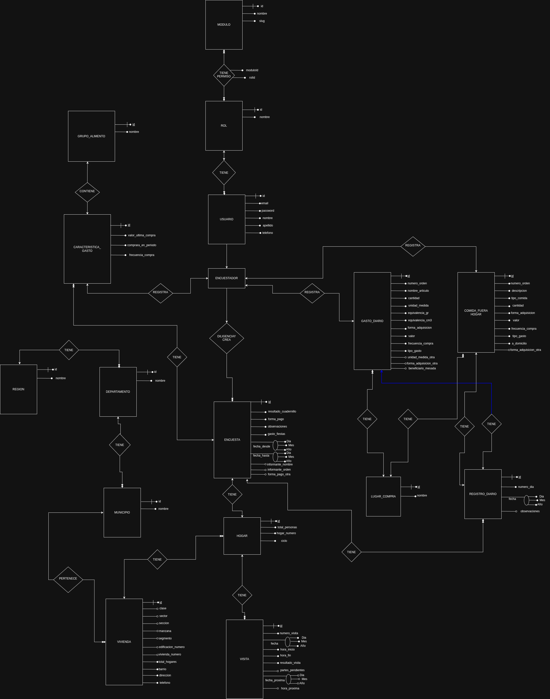
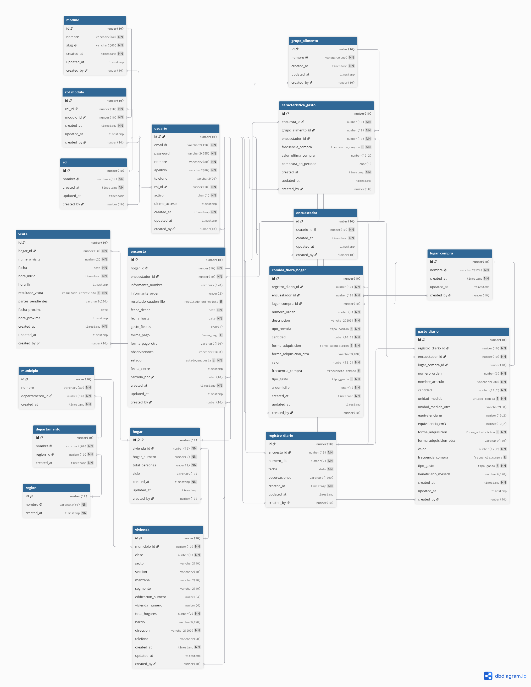

Arquitectura, instalación, base de datos Oracle, PL/SQL y guía de mantenimiento de la aplicación del Cuadernillo 2 urbano (ENPH · DANE).
Este documento describe la construcción técnica de ENPH Urbana · Panel de campo, una aplicación de escritorio para registrar y procesar el Cuadernillo 2 (gastos diarios urbanos del hogar) de la Encuesta Nacional de Presupuestos de los Hogares (ENPH) del DANE. Integra las asignaturas Ingeniería de Software I, Bases de Datos II y Programación II.
Restricciones del enunciado: diseño orientado a objetos, arquitectura cliente–servidor y persistencia en una base de datos relacional Oracle. La interfaz se construye con JavaFX.
| RF | Descripción | Componentes principales |
|---|---|---|
| RF-01 | Autenticación y autorización por módulos | AuthService, middleware/*, Sesion |
| RF-02 | Gestión de usuarios | UsuarioService, UsuarioDAO, EncuestadorDAO |
| RF-03 | Viviendas, hogares y apertura de la encuesta | HogarService, EncuestaService |
| RF-04 / RF-09 | Gastos diarios (D) y comidas fuera del hogar (D1) | GastoDiarioService |
| RF-05 | CRUD de registros mientras el caso es editable | Servicios + trg_val_* |
| RF-06 | Cierre (D2) y reapertura | EncuestaService, pr_cerrar_encuesta, pr_reabrir_encuesta |
| RF-07 | Capítulo C (25 grupos) | CaracteristicaService |
| RF-08 | Control de visitas (Cap. B) | VisitaService |
| RF-10 | Verificación, aprobación y rechazo | VerificacionService, pr_aprobar_encuesta, pr_rechazar_encuesta |
| RF-11 | Roles y permisos por módulo | RolService, rol_modulo |
| RF-12 | Reportes y tablero | ReporteService, ReporteDAO, plsql/reportes.sql |
| RF-13 | Exportación de aprobados a Excel | util/LibroExcel, pr_exportar_aprobadas |
| RF-14 | Auditoría y seguridad en la BD | trg_cud_*, auditoria, usuarios_roles.sql |
Aplicación JavaFX con arquitectura cliente–servidor. El cliente se organiza con el patrón MVC, con el modelo dividido en capas, y se conecta por JDBC a Oracle 10g, que actúa como servidor.
resources/com/udi/ui. Sin lógica.controller.<modulo>. Lee campos, llama servicios, muestra resultados.service.<modulo>. Reglas de negocio; lanza ReglaNegocioException.dao.<modulo>. SQL JDBC, uno por tabla, extiende BaseDAO.Las entidades de model (que extienden Entidad/EntidadAuditable) y los enums de model/enums atraviesan las capas sin depender de ninguna.
fx:controller, onAction="#metodo"; los manejadores son métodos @FXML private).util/Tareas.ejecutar (segundo plano, una tarea a la vez, errores con util/Alertas). Nunca usa un DAO ni escribe SQL.model no depende de ninguna capa.Las reglas de negocio viven en los servicios (mensajes claros al usuario) y la base de datos repite las críticas como segunda barrera: disparadores trg_val_<tabla> y procedimientos de cambio de estado. Un error ORA-20000…20999 se convierte en ReglaNegocioException con la primera línea del mensaje.
| Componente | Versión / detalle |
|---|---|
| Java | JDK 21+ (maven-compiler-plugin con release 21), Java Platform Module System |
| JavaFX | 21.0.5 (javafx-controls, javafx-fxml), javafx-maven-plugin 0.0.8 |
| Build | Apache Maven 3.6+ |
| Base de datos | Oracle 10g (Docker oracle-xe-10g en desarrollo; servidor UDI en producción) |
| Driver JDBC | ojdbc6 11.2.0.4 (los drivers más nuevos no conectan con un servidor 10g) |
| Excel | Sin librerías externas: util/LibroExcel escribe Office Open XML con java.util.zip |
| Charset de la BD | ZHS16GBK; el cliente SQL*Plus requiere NLS_LANG=AMERICAN_AMERICA.AL32UTF8 |
module com.udi {
requires javafx.controls; requires javafx.fxml;
requires java.sql; // JDBC
requires java.prefs; // "Recordarme" del login
requires ojdbc6; // módulo automático
opens com.udi.controller.auth to javafx.fxml; // uno por cada paquete de controladores
opens com.udi.componentes to javafx.fxml;
...
}opens … to javafx.fxml, y cada dependencia nueva su requires. No se debe declarar opens de un paquete que aún no existe: la compilación falla. Los controladores usan cell factories con lambdas (no PropertyValueFactory), por lo que model no necesita opens.proyecto_integrador_UDI/
├── pom.xml
├── docs/
│ ├── arquitectura/arquitectura.md # Árbol completo y reglas de capas
│ ├── db-documentacion/ # Modelo (dbml/md), diagramas, migraciones, pruebas
│ ├── sql-creaciones-servidor-udi/
│ │ ├── db-origen/ # Esquema de la aplicación
│ │ └── db-destino/ # Esquema central (sincronización)
│ ├── referencias/ # Enunciado, diseño, Cuadernillo 2, guías (PDF)
│ └── manuales/ # Este manual y el de usuario
└── src/main/
├── java/module-info.java
├── java/com/udi/
│ ├── App.java # Arranque, escena única, setRoot / cargar
│ ├── config/ConexionBD.java # Conexión única, consultar / enTransaccion
│ ├── model/ (32) + model/enums/ (9) # Entidades y enums
│ ├── dao/BaseDAO.java + dao/<modulo>/ # 22 DAO
│ ├── service/<modulo>/ # 13 servicios
│ ├── controller/<modulo>/ # 26 controladores
│ ├── middleware/ # Rutas, RutasModulo, middlewares
│ ├── componentes/ # SelectBuscable, Paginador
│ ├── exception/ # ReglaNegocio, AccesoDenegado, Datos
│ └── util/ # Sesion, Seguridad, Validar, Alertas, Formato,
│ # LibroExcel, Modal, Tareas, ...
└── resources/com/udi/
├── config/db.properties(.example)
└── ui/
├── shared/ (estilos.css, layout/navbar.fxml, layout/pendiente.fxml)
└── modulos/<modulo>/*.fxml (+ partials/, estilos.css)Módulos (subpaquetes de controller, service y dao): auth, shared (solo NavbarController), usuarios, roles, viviendas, encuestas, reportes, verificacion y catalogos (regiones, departamentos, municipios, grupos de alimento y lugares de compra).
El proyecto usa dos esquemas en la misma base Oracle:
| Esquema | Rol | Carpeta de instalación |
|---|---|---|
DJGCJDCMPI (origen) | Esquema con el que trabaja la aplicación: tablas, catálogos, datos de prueba, auditoría, PL/SQL y vistas de sincronización | db-origen/ |
DJGCJDCMPI_CENTRAL (destino) | Esquema central que recibe las encuestas APROBADAS: mismas tablas, solo catálogos, PL/SQL y pr_sincronizar_aprobadas | db-destino/ |
ENPH* de otros equipos: no use esos nombres. Revise db.properties antes de ejecutar scripts.| Script | Contenido |
|---|---|
01_crear_usuario.sql <usuario> | Crea el usuario Oracle (como SYSTEM). Se niega si ya existe. |
02_tablas.sql | Secuencias, tablas, PK, FK, CHECK e índices. |
03_catalogos.sql | Módulos, roles, grupos de alimento, lugares de compra y ubicaciones (ubicaciones/). |
04_datos_iniciales.sql (origen) | Datos de prueba con ids fijos (solo en esquema vacío). |
05_auditoria.sql / 04_auditoria.sql | Tabla auditoria y seq_auditoria. |
06_vistas_sincronizacion.sql <DESTINO> (origen) | Vistas vis_sinc_* y GRANT SELECT al destino. |
05_procedimiento_sincronizacion.sql <ORIGEN> (destino) | pr_sincronizar_aprobadas y sus GRANT EXECUTE. |
plsql/ | funciones.sql, procedimientos.sql, disparadores.sql, reportes.sql. |
instalar.sql | Ejecuta todo en orden; se detiene en el primer error, se niega si el esquema ya tiene tablas y verifica objetos inválidos. |
usuarios_roles.sql <owner> (origen) | Cuentas Oracle <owner>_APP, _CONSULTA y _AUDITOR (opcional). |
prueba_sincronizacion.sql <DESTINO> | Prueba de la sincronización (termina en ROLLBACK). |
oracle-xe-10g, puerto 1522, SID XE)docker cp docs/sql-creaciones-servidor-udi/db-origen oracle-xe-10g:/tmp/db-origen
docker cp docs/sql-creaciones-servidor-udi/db-destino oracle-xe-10g:/tmp/db-destino
O="docker exec -it -w /tmp/db-origen -e NLS_LANG=AMERICAN_AMERICA.AL32UTF8 oracle-xe-10g"
D="docker exec -it -w /tmp/db-destino -e NLS_LANG=AMERICAN_AMERICA.AL32UTF8 oracle-xe-10g"
$O sqlplus system/oracle @01_crear_usuario.sql DJGCJDCMPI
$D sqlplus system/oracle @01_crear_usuario.sql DJGCJDCMPI_CENTRAL # el destino debe existir antes
$O sqlplus DJGCJDCMPI/<clave> @instalar.sql DJGCJDCMPI_CENTRAL
$O sqlplus system/oracle @usuarios_roles.sql DJGCJDCMPI # opcional
$D sqlplus DJGCJDCMPI_CENTRAL/DJGCJDCMPI_CENTRAL @instalar.sql DJGCJDCMPI
$O sqlplus DJGCJDCMPI/<clave> @prueba_sincronizacion.sql DJGCJDCMPI_CENTRALSe ejecuta desde dentro de cada carpeta, con NLS_LANG definido. El orden importa: primero los dos usuarios, luego el origen y al final el destino.
export NLS_LANG=AMERICAN_AMERICA.AL32UTF8
cd db-origen
sqlplus system/<clave>@192.168.254.215:1521/ORCL @01_crear_usuario.sql DJGCJDCMPI
cd ../db-destino
sqlplus system/<clave>@192.168.254.215:1521/ORCL @01_crear_usuario.sql DJGCJDCMPI_CENTRAL
cd ../db-origen
sqlplus DJGCJDCMPI/DJGCJDCMPI@192.168.254.215:1521/ORCL @instalar.sql DJGCJDCMPI_CENTRAL
# → "Origen instalado. Siga con db-destino/instalar.sql (parametro: este esquema)."
cd ../db-destino
sqlplus DJGCJDCMPI_CENTRAL/DJGCJDCMPI_CENTRAL@192.168.254.215:1521/ORCL @instalar.sql DJGCJDCMPI
# → "Destino instalado. Configure db.esquemaDestino con este esquema en la aplicacion."
cd ../db-origen
sqlplus DJGCJDCMPI/DJGCJDCMPI@192.168.254.215:1521/ORCL @prueba_sincronizacion.sql DJGCJDCMPI_CENTRALinstalar.sql solo funciona en un esquema vacío porque los datos de prueba usan ids fijos (1, 2, 3…). Para reinstalar: DROP USER <usuario> CASCADE y repetir desde el paso 1. Si se recrea el destino, vuelva a ejecutar 06_vistas_sincronizacion.sql en el origen.Copie src/main/resources/com/udi/config/db.properties.example como db.properties en la misma carpeta:
db.url=jdbc:oracle:thin:@192.168.254.215:1521:ORCL # Docker: jdbc:oracle:thin:@localhost:1522:XE
db.usuario=DJGCJDCMPI
db.contrasena=<clave>
db.esquema= # dueño de las tablas si se conecta con <owner>_APP
db.esquemaDestino=DJGCJDCMPI_CENTRAL # esquema central para "Sincronizar aprobadas"Cada valor se puede sobrescribir al ejecutar con -Ddb.url, -Ddb.usuario, -Ddb.contrasena, -Ddb.esquema y -Ddb.esquemaDestino (este último se valida como identificador Oracle). Para conectarse con la cuenta de mínimos privilegios: db.usuario=DJGCJDCMPI_APP, db.contrasena=DJGCJDCMPI_APP, db.esquema=DJGCJDCMPI.
db.properties está en .gitignore pero sigue versionado en git; evite publicar contraseñas reales en el repositorio.mvn clean javafx:run # ejecuta la aplicación (clase principal com.udi.App)
mvn clean package # compila y empaqueta
mvn compile # solo compilaUsuarios de prueba (contraseña 123456, guardada como SHA-256 hex): admin@enph.udi.edu.co (ADMIN), cperez@… (CRITICO_DIGITADOR), lmartinez@… y otros (ENCUESTADOR), rcastillo@… (inactivo).
config/ConexionBDORA-12519). App.stop() la cierra.ConexionBD.consultar(c -> …) para lecturas; ConexionBD.enTransaccion(c -> …) para escrituras: commit si todo sale bien, rollback ante cualquier excepción.ALTER SESSION SET CURRENT_SCHEMA = <db.esquema> y vuelve a identificar al usuario de la sesión (pr_iniciar_sesion).ORA-20000…20999 a ReglaNegocioException; los demás errores a DatosException.dao/BaseDAOBaseDAO (buscarPorId, listar, eliminar, contar). Cada método recibe la Connection como primer parámetro, para que un servicio agrupe varias operaciones en una transacción.insertar toma seq_<tabla>.NEXTVAL; asignarId respeta un id ya asignado (los catálogos usan el código oficial del cuadernillo).actualizar pone updated_at = SYSTIMESTAMP; created_by viene de util/Sesion.LocalDate ↔ DATE, LocalDateTime ↔ TIMESTAMP, boolean ↔ CHAR(1) 'S'/'N', enum ↔ VARCHAR2 con el nombre de la constante (no el código numérico).consultarPagina con ROWNUM (Oracle 10g no tiene OFFSET); búsqueda sin tildes con patron/sinTildes; devuelve model/Pagina<T>.llamar(c, "pr_…", args) con CallableStatement (solo parámetros IN, sin COMMIT).ReporteDAO (consultas agregadas, usa el público asignarParametros), ExportacionDAO (lee el SYS_REFCURSOR de pr_exportar_aprobadas con OracleTypes.CURSOR) y SincronizacionDAO no extienden BaseDAO.| Servicio | Responsabilidad |
|---|---|
auth/AuthService | Login (SHA-256), usuario activo, ultimo_acceso, carga de permisos en Sesion, pr_iniciar_sesion/pr_cerrar_sesion. |
usuarios/UsuarioService | CRUD de usuarios, encuestador automático, contraseña, activar/desactivar; reglas sobre el propio usuario y el rol ADMIN. |
roles/RolService | Roles y matriz rol_modulo (guardarPermisos en una transacción); protege roles del sistema. |
viviendas/HogarService | Viviendas y hogares; visibilidad por created_by para el encuestador; número de hogar 1–99. |
encuestas/EncuestaService | Crear encuesta, periodo (fecha_hasta = fecha_desde + 13), cerrar, reabrir, revisiones. |
encuestas/VisitaService | Control de visitas (Cap. B). |
encuestas/CaracteristicaService | 25 grupos del Cap. C; C.3.1/C.3.2 solo si la frecuencia supera la bisemana. |
encuestas/GastoDiarioService | Días, gastos D y comidas D1: fecha del día, personales días 1–7, reglas por forma de adquisición. |
encuestas/ReglasEncuesta | Regla compartida: no se modifica una encuesta PENDIENTE_APROBACION o APROBADA. |
catalogos/UbicacionService, CatalogoService | Regiones, departamentos, municipios, grupos y lugares (escritura solo ADMIN). |
reportes/ReporteService | Tablero; el encuestador solo ve lo suyo. |
verificacion/VerificacionService | Validación cruzada (9 reglas), aprobar, rechazar, exportar uno/todos, sincronizar. |
| Regla | Dónde |
|---|---|
Usuario inactivo no inicia sesión; cada login actualiza ultimo_acceso | AuthService |
| Sin visitas, Cap. C, días, gastos ni comidas en encuesta PENDIENTE_APROBACION o APROBADA (RF-06) | Servicios de encuesta + trg_val_* |
fecha_hasta = fecha_desde + 13; fecha del día = fecha_desde + numero_dia − 1 | EncuestaService, GastoDiarioService, trg_val_registro_diario |
Gastos PERSONAL solo días 1 a 7 | GastoDiarioService + trg_val_gasto_diario/comida |
| Cap. C con los 25 grupos antes de los registros diarios | CaracteristicaService/GastoDiarioService |
No compra ⇒ lugar y frecuencia vacíos; compra ⇒ frecuencia obligatoria; NUNCA solo en Cap. C; «Otra» exige ¿cuál?; equivalencia solo con unidad OTRA | GastoDiarioService |
| Roles no se renombran; ADMIN y ENCUESTADOR no se eliminan; permisos del ADMIN no se editan; no se elimina un rol con usuarios | RolService |
| Solo un ENCUESTADOR crea encuestas; solo ADMIN reabre o asigna/edita usuarios ADMIN | EncuestaService, UsuarioService |
La lista de chequeo del cierre solo se exige en la UI; cerrar verifica que sea editable (dentro de pr_cerrar_encuesta) | EncuestaCierreController, EncuestaService |
App mantiene una única Scene (con ui/shared/estilos.css) y arranca en modulos/auth/login. App.setRoot("<vista>") cambia la ventana completa.NavbarController.abrir("<vista>", migas…) carga una vista en el área de contenido y devuelve su controlador (p. ej. editar(id)). Tras el login abre el primer módulo visible.EncuestaDetalleController.abrir(id, Pestana.X) abre el detalle; cada pestaña implementa SeccionEncuesta. Lo editable depende solo de esEditable().util/Modal.cargar("<vista>", titulo) → modal.controlador() → modal.mostrar().App.start) muestra los errores como alertas.com.udi.componentes)SelectBuscable<T>: select con búsqueda y paginación («Ver más»), alimentado por una Fuente que llama a un servicio que devuelve Pagina<T>. controller/viviendas/SelectoresUbicacion encadena región → departamento → municipio.Paginador<T>: paginación en memoria de 10 filas; vincular(tabla, filtradas, "singular", "plural"), ordena toda la lista con un SortedList. setFilaFinal(supplier) repite una fila en cada página (Total de Reportes) y ajustarAlto(altoFila) fija la altura.com.udi.middleware)Inspirado en un router Express (router.get('/x', isAuth, ModulePermission, controller)): Rutas asigna a cada prefijo de vista una cadena de Middleware, y App.cargar ejecuta Rutas.exigir(vista) antes de cargar cualquier pantalla, pestaña, formulario o modal, lanzando AccesoDenegadoException.
| Prefijo de vista | Cadena |
|---|---|
modulos/auth/ | Pública |
modulos/usuarios/, roles/, viviendas/, encuestas/, reportes/, verificacion/ | AutenticacionMiddleware → PermisoModuloMiddleware |
Cualquier otra (shared/layout/navbar…) | AutenticacionMiddleware |
PermisoModuloMiddleware deja pasar al ADMIN y, para otros roles, resuelve el slug con RutasModulo.slugsDe(vista) (prefijo más largo) y lo compara con los rol_modulo de la sesión. Los controladores no validan roles: ocultan botones con Rutas.permitir(nodo, vista). Los servicios repiten la verificación con Sesion.exigirModulo(RutasModulo.X) (y Sesion.exigirAdmin() para catálogos y ubicaciones).
util/Seguridad); nunca se registran en la auditoría.RolService recarga).created_by), filtrado en el DAO y verificado en las escrituras.usuarios_roles.sql <owner>)| Cuenta | Rol Oracle | Privilegios |
|---|---|---|
<owner>_APP | ROL_<owner>_APLICACION | DML, secuencias y EXECUTE; sin DDL |
<owner>_CONSULTA | ROL_<owner>_LECTURA | SELECT salvo usuario; EXECUTE de funciones |
<owner>_AUDITOR | ROL_<owner>_AUDITOR | SELECT de auditoria y auditoria_encuesta |
Las contraseñas son iguales al nombre de usuario; el owner admite máximo 16 caracteres. Los permisos son por objeto: vuelva a ejecutar el script tras agregar tablas o PL/SQL.
Fuente de verdad del esquema: docs/db-documentacion/modelo_relacional.dbml (documentado en modelo_relacional.md, con el diccionario de datos completo).


| Grupo | Tablas |
|---|---|
| Seguridad | modulo, rol, rol_modulo, usuario, encuestador |
| Ubicación | region (6), departamento (33, id = código DANE), municipio (1102) |
| Cap. A, B y D2 | vivienda, hogar, encuesta, visita |
| Cap. C | grupo_alimento (25, códigos oficiales), caracteristica_gasto |
| Cap. D y D1 | lugar_compra (códigos oficiales), registro_diario, gasto_diario, comida_fuera_hogar |
| Verificación y auditoría | auditoria_encuesta (APROBADA/RECHAZADA con observación), auditoria (INSERCION/MODIFICACION/ELIMINACION) |
created_at (default SYSTIMESTAMP), updated_at, created_by (FK a usuario).VARCHAR2 + CHECK con el nombre de la constante; booleanos CHAR(1) 'S'/'N'.seq_<tabla>; empiezan en 7 (region), 100 (departamento), 1103 (municipio) y 26 (grupo_alimento, lugar_compra) para no chocar con los ids cargados.vivienda no guarda el total de hogares (A.12): lo calcula ViviendaDAO, que además une los nombres de municipio, departamento y región.gasto_diario no tiene grupo de alimento: la gráfica de grupos de Reportes cuenta hogares desde caracteristica_gasto.ñ/Ñ ni mayúsculas con tilde: ñ se guarda como ? y Á pasa a á. Los mensajes PL/SQL y las descripciones de auditoría evitan esos caracteres. Sin NLS_LANG el texto acentuado se corrompe.docs/db-documentacion/migraciones/ convierte esquemas antiguos: migracion_estados_encuesta.sql (de cinco estados a cuatro), migracion_unificar_modulos.sql (de 10 a 6 módulos), migracion_verificacion.sql (agrega auditoria_encuesta), migracion_quitar_total_hogares.sql y migracion_auditoria.sql.
.dbml → modelo_relacional.md → todas las copias de 02_tablas.sql/03_catalogos.sql/auditoría/plsql/ (origen, destino y db-documentacion) → vistas y procedimiento de sincronización si la tabla se sincroniza → listas de columnas de los DAO.Vive en plsql/ de cada carpeta de instalación y se ejecuta al final de instalar.sql. En un esquema existente se vuelve a ejecutar el archivo modificado.
funciones.sql)| Función | Uso |
|---|---|
fn_codigo_encuesta(id) | Código visible E-000005. |
fn_estado_encuesta, fn_descripcion_estado | Estado y su texto. |
fn_encuesta_editable | ¿La encuesta admite cambios? (EN_CURSO o RECHAZADA). |
fn_fecha_dia, fn_dia_registro | Fecha esperada de un día del periodo. |
fn_encuesta_hogar, fn_encuesta_registro | Encuesta a la que pertenece un hogar o registro diario. |
fn_gasto_total_encuesta | Gasto total (D + D1); usada por ReporteDAO. |
fn_usuario_sesion | Usuario de la sesión (CLIENT_IDENTIFIER) para la auditoría. |
fn_columna | Relleno de columnas de reportes (RPAD cuenta tildes como ancho 2 en ZHS16GBK). |
procedimientos.sql)| Procedimiento | Uso |
|---|---|
pr_cerrar_encuesta | EN_CURSO/RECHAZADA → PENDIENTE_APROBACION; llena fecha_cierre y cerrada_por. |
pr_reabrir_encuesta | PENDIENTE_APROBACION/APROBADA → EN_CURSO (solo ADMIN en el servicio). |
pr_rechazar_encuesta | PENDIENTE_APROBACION → RECHAZADA con observación; registra la revisión. |
pr_aprobar_encuesta | PENDIENTE_APROBACION → APROBADA; registra la revisión. |
pr_incluir_revision | Inserta en auditoria_encuesta. |
pr_exportar_aprobadas | OUT SYS_REFCURSOR con el resumen de aprobadas por ubicación (solo lectura). |
pr_iniciar_sesion, pr_cerrar_sesion | DBMS_SESSION.SET_IDENTIFIER / limpiar. |
incluir_auditoria | Inserta una fila en auditoria (la llaman los trg_cud_*). |
Ningún procedimiento hace COMMIT: quedan dentro de enTransaccion.
disparadores.sql)trg_val_<tabla> (encuesta, visita, caracteristica_gasto, registro_diario, gasto_diario, comida_fuera_hogar): BEFORE INSERT OR UPDATE (nunca DELETE, para evitar ORA-04091 en cascadas). Repiten caso cerrado, fecha del día, gastos personales y transiciones válidas de estado.trg_cud_<tabla> en las 19 tablas: AFTER INSERT OR UPDATE OR DELETE, FOR EACH ROW. Solo leen :NEW/:OLD (sin consultas) y nunca registran la contraseña. auditoria.usuario_id = CLIENT_IDENTIFIER de la sesión o, en inserciones, el created_by de la fila.reportes.sql)Funciones con cursores (estilo de la guía de Bases de Datos II) que devuelven un VARCHAR2 multilínea (máx. 32000 caracteres, luego «... (reporte recortado)»):
fn_reporte_encuestas(estado) · fn_reporte_encuestadores(desde, hasta) · fn_reporte_gasto_ubicacion · fn_reporte_revisiones(encuesta)SET SERVEROUTPUT ON
SET LINESIZE 32767 -- con líneas más cortas el texto se parte
BEGIN
DBMS_OUTPUT.PUT_LINE(fn_reporte_encuestas('APROBADA'));
END;
/| Código | Significado |
|---|---|
| -20001 | No existe la encuesta |
| -20002 | La encuesta está cerrada (no admite cambios) |
| -20003 | El estado de la encuesta no permite la acción |
| -20004 | Falta la observación del rechazo |
| -20005 | La fecha del día no corresponde al periodo de la encuesta |
| -20006 | Gasto personal después del día 7 |
| -20007 | Cambio de estado no permitido |
| -20008 | Parámetro no válido en un reporte o en pr_exportar_aprobadas |
Pruebas: docs/db-documentacion/pruebas/bloques_anonimos.sql (demostración de funciones, procedimientos y disparadores; termina en ROLLBACK) y pruebas_seguridad.sql (permisos por cuenta).
Enum EstadoEncuesta: EN_CURSO, PENDIENTE_APROBACION, APROBADA, RECHAZADA. Todos los cambios pasan por procedimientos llamados desde EncuestaDAO con BaseDAO.llamar.
| Desde | Hacia | Acción / procedimiento | Quién | ¿Historial? |
|---|---|---|---|---|
| EN_CURSO | PENDIENTE_APROBACION | Cerrar · pr_cerrar_encuesta | Encuestador | No |
| RECHAZADA | PENDIENTE_APROBACION | Cerrar de nuevo · pr_cerrar_encuesta | Encuestador | No |
| PENDIENTE_APROBACION | APROBADA | Aprobar · pr_aprobar_encuesta (tras las 9 reglas sin errores) | Crítico-digitador | Sí |
| PENDIENTE_APROBACION | RECHAZADA | Rechazar · pr_rechazar_encuesta (observación ≤ 1000) | Crítico-digitador | Sí |
| PENDIENTE / APROBADA | EN_CURSO | Reabrir · pr_reabrir_encuesta | ADMIN | No |
auditoria_encuesta.accion (AccionAuditoria) solo admite APROBADA y RECHAZADA: cerrar, reabrir y exportar no quedan en el historial (sí en la tabla auditoria).
VerificacionService)Nueve reglas, cada una CORRECTA, AVISO o ERROR (ReglaVerificacion): Cap. A informante y resultado; control de visitas (B); Cap. C grupos; Cap. C última compra (C.3); línea de 14 días (D y D1); gastos personales días 1–7; valores según forma de adquisición; lugar de compra; D2 cierre. Los errores bloquean aprobar.
Sigue la guía SincronizaciónOracle (Esquema a esquema): vistas en el origen con GRANT SELECT y un procedimiento con cursores en el destino.
vis_sinc_<tabla> (12) + GRANT SELECT al destino.SincronizacionDAO dentro de enTransaccion.pr_sincronizar_aprobadas(OUT nuevas, OUT actualizadas)El procedimiento:
rol, usuario y encuestador que falten; hace MERGE de vivienda y hogar.updated_at es más reciente, la elimina (cascada + visitas del hogar) y la vuelve a insertar; si no cambió, no la toca.updated_at del origen), porque los trg_val_* del destino rechazan filas de una encuesta cerrada.&origen..vista requiere doble punto. Vuelva a ejecutar 05_procedimiento_sincronizacion.sql tras usuarios_roles.sql (otorga EXECUTE a ROL_<origen>_APLICACION).util/LibroExcel es un escritor mínimo de Office Open XML sobre java.util.zip (varias hojas, formato de pesos y porcentajes), sin dependencias nuevas en module-info.
| Exportación | Contenido | Implementación |
|---|---|---|
| Reportes | Una hoja por sección del tablero; la tabla por encuestador con todas las filas. | ReporteController + LibroExcel |
| Un caso aprobado | Hojas A/D2, B, C, D y D1. | VerificacionService + Capitulos |
| Todas las aprobadas | Hoja «Encuestas aprobadas» (de pr_exportar_aprobadas) + hojas B, C, D y D1 con el código de cada encuesta en la primera columna. Filtra por región/departamento/municipio. Archivo ENPH_C2_aprobadas_<fecha>.xlsx. | VerificacionService.exportarAprobadas, ExportacionDAO (OracleTypes.CURSOR) |
Ninguna exportación cambia el estado de los casos.
Las vistas se nombran por su ruta dentro de ui sin extensión (p. ej. "modulos/encuestas/encuesta"). Pantallas por módulo:
| Módulo | FXML |
|---|---|
| auth | login |
| shared | layout/navbar (barra lateral + encabezado), layout/pendiente («en construcción») |
| encuestas | encuesta, encuesta_detalle; partials: nueva_encuesta, encuesta_visitas, visita_form, encuesta_hogar, encuesta_capitulo_c, encuesta_gastos, renglon_form, encuesta_cierre, cerrar_caso, encuesta_correcciones |
| viviendas | vivienda, vivienda_detalle; partials: vivienda_form, hogar_form |
| verificacion | verificacion |
| reportes | reporte |
| usuarios | usuario, usuario_form |
| roles | rol; partials: rol_form |
La interfaz sigue el diseño «ENPH Urbana – Pantallas» y su sistema de diseño: fondo arena (#e8e1d5), barra lateral azul marino (#1a2332), acento terracota (#b8431f), tarjetas blancas, títulos con tipografía serif y texto sans; insignias de estado En curso Pendiente Aprobada Rechazada.
ui/shared/estilos.css: tokens de color (-color-tinta, -color-suave…) y componentes comunes (botones, campos, tablas, tarjetas, insignias, avisos, modales, SelectBuscable, Paginador). Se adjunta a la escena y a cada modal.ui/modulos/<modulo>/estilos.css: estilos propios; App.cargar los adjunta a la raíz de cada vista de la carpeta (el FXML no declara hojas).ui/shared/layout/estilos.css: estructura (barra lateral y encabezado).SelectBuscable copian solo las hojas de la escena.ui/modulos/<modulo>/ (y estilos.css si hace falta).controller/<modulo>/ y, si aplica, service/<modulo>/ y dao/<modulo>/.opens com.udi.controller.<modulo> to javafx.fxml; en module-info.java.middleware/RutasModulo y la ruta en Rutas.modulo (y su copia en 03_catalogos.sql) y asignarlo en rol_modulo.navbar.fxml/NavbarController.Sesion.exigirModulo(RutasModulo.X).modelo_relacional.dbml y modelo_relacional.md; regenerar diagramas.02_tablas.sql (origen, destino) y, si aplica, catálogos, auditoría (trg_cud_<tabla>) y trg_val_<tabla>.vis_sinc_<tabla> y columnas de pr_sincronizar_aprobadas.model, DAO que extienda BaseDAO (lista de columnas), servicio con reglas.docs/db-documentacion/migraciones/ (sin PL/SQL) y volver a ejecutar usuarios_roles.sql por los permisos por objeto.Rutas.permitir.Tareas.ejecutar.SelectBuscable en lugar de ComboBox; tablas con Paginador.ñ ni mayúsculas acentuadas.| Síntoma | Causa / solución |
|---|---|
ORA-12519 (sin procesos disponibles) | Demasiadas conexiones abiertas. La aplicación usa una conexión única; revise que ningún código abra conexiones por operación y que no haya sesiones colgadas. |
| No conecta a Oracle 10g con un driver nuevo | Use ojdbc6 11.2.0.4. |
| Textos con tildes corruptos | Definir NLS_LANG=AMERICAN_AMERICA.AL32UTF8 al ejecutar SQL*Plus. |
instalar.sql se niega a ejecutar | El esquema ya tiene tablas. DROP USER … CASCADE, recrear y reinstalar. |
ORA-04091 (tabla mutante) | Un disparador consulta su propia tabla en una cascada. Los trg_val_* no se disparan en DELETE y los trg_cud_* solo leen :NEW/:OLD; mantener esa regla. |
| Error FXML «module does not open …» | Falta opens com.udi.controller.<modulo> to javafx.fxml. |
| «No está configurado el esquema destino de la sincronización» | Definir db.esquemaDestino en db.properties o con -Ddb.esquemaDestino. |
| «No se pudo ejecutar <destino>.pr_sincronizar_aprobadas» | Falta el procedimiento o el GRANT EXECUTE: reinstalar el destino o volver a ejecutar 05_procedimiento_sincronizacion.sql. |
Las vistas vis_sinc_* no son visibles para el destino | Se recreó el usuario destino: volver a ejecutar 06_vistas_sincronizacion.sql <DESTINO> en el origen. |
Permiso denegado con <owner>_APP en un objeto nuevo | Los grants son por objeto: volver a ejecutar usuarios_roles.sql. |
| Reporte PL/SQL partido en varias líneas | Usar SET LINESIZE 32767. |